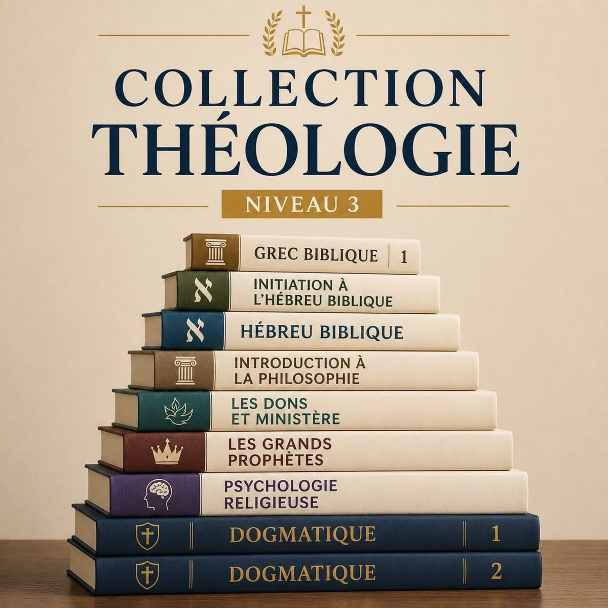
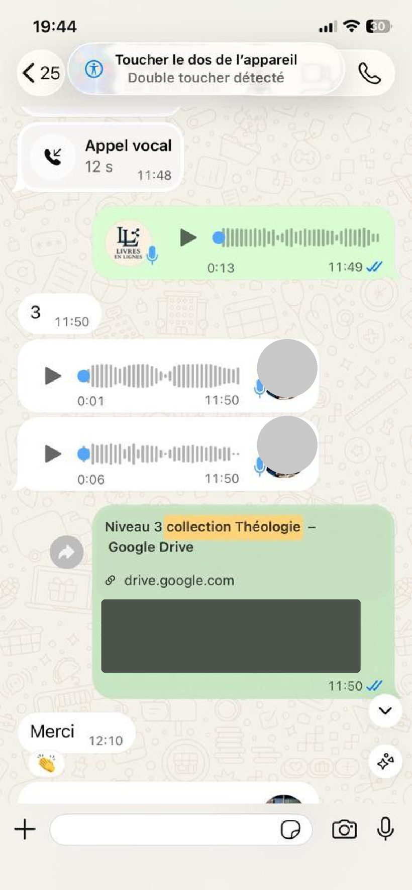

Ancien Testament
Parcourez les grandes lignes de l'Ancien Testament et ses enseignements fondamentaux.
Formation théologique
Approfondissez votre connaissance de la Bible, de la théologie et de l'histoire de l'Église.
Une collection numérique riche en cours et ouvrages pour approfondir l'étude biblique, les langues bibliques, la théologie, la doctrine, l'histoire de l'Église, l'interprétation de la Bible et plusieurs autres domaines essentiels.

Vue d'ensemble
Le Niveau 3 rassemble des ressources destinées à ceux qui souhaitent aller plus loin dans leur étude biblique et théologique.
Approfondissez votre compréhension des textes et des grandes thématiques bibliques.
Explorez les grands domaines de la pensée théologique et doctrinale.
Travaillez avec des ressources consacrées au grec et à l'hébreu.
Découvrez des ressources consacrées à l'histoire de l'Église et au ministère chrétien.
Un ensemble de ressources de cours couvrant plusieurs domaines de la théologie et de l'étude biblique.
Parcourez les grandes lignes de l'Ancien Testament et ses enseignements fondamentaux.
Approfondissez l'étude des grandes doctrines de la foi chrétienne.
Étudiez le contenu et les enseignements des épîtres générales du Nouveau Testament.
Explorez en détail le texte et les grandes thématiques de l'évangile de Jean.
Découvrez les bases du grec utilisé dans les textes bibliques.
Découvrez les bases de l'hébreu utilisé dans les textes bibliques.
Explorez l'histoire de l'Église sur le continent africain.
Parcourez les grandes étapes de l'histoire de l'Église chrétienne.
Abordez les principes généraux liés à l'implantation d'Églises.
Une première approche des bases de l'hébreu biblique.
Découvrez les grandes lignes de la pensée philosophique.
Étudiez le message et le ministère des grands prophètes bibliques.
Explorez les différents dons liés au ministère chrétien.
Abordez les liens entre psychologie et vie religieuse.
Des ouvrages complémentaires pour poursuivre vos recherches, vos lectures et votre étude personnelle.
Ouvrage de référence pour le vocabulaire grec biblique.
Ouvrage consacré à l'étude de la théologie biblique.
Ouvrage de référence pour l'apprentissage du grec.
Ouvrage de référence pour l'apprentissage de l'hébreu biblique.
Ouvrage consacré à l'étude du grec du Nouveau Testament.
Ouvrage retraçant l'histoire de l'Église chrétienne.
Ouvrage consacré à l'histoire des religions.
Ouvrage d'introduction à l'étude du Nouveau Testament.
Ouvrage consacré à la figure de Jésus-Christ à travers l'histoire.
Ouvrage consacré à l'histoire de l'Église en Afrique du Nord.
Ouvrage d'apprentissage de l'hébreu biblique.
Ouvrage d'initiation au grec ancien.
Manuel d'apprentissage de base du grec.
Ouvrage consacré à l'histoire des dogmes chrétiens.
Ouvrage consacré aux principes d'interprétation biblique.
Ouvrage consacré aux méthodes d'étude de la Bible.
Avec cette collection, vous disposez d'un ensemble de ressources numériques pour approfondir votre étude biblique et théologique.
Un bonus supplémentaire pour enrichir votre bibliothèque chrétienne.
En complément de la Collection Théologie Niveau 3, bénéficiez également d'un bonus de plus de 400 livres chrétiens numériques.
Pour approfondir leurs connaissances et enrichir leur ministère.
Pour disposer de ressources supplémentaires pour leur formation.
Pour approfondir leur compréhension biblique et théologique.
Pour disposer de ressources complémentaires pour leurs études.
Pour développer leurs connaissances bibliques et théologiques.
Pour ceux qui souhaitent aller plus loin dans leur compréhension de la Bible.
Découvrez quelques retours de personnes ayant déjà reçu leurs ressources.

Accédez à la Collection Théologie Niveau 3 et découvrez ses cours, ses ouvrages et son bonus de +400 livres chrétiens.
C'est une collection numérique réunissant 14 cours théologiques et 16 livres complémentaires, ainsi qu'un bonus de plus de 400 livres chrétiens, pour approfondir l'étude biblique et théologique.
Une sélection de 14 cours couvrant l'étude biblique, les langues bibliques, la théologie, la doctrine, l'histoire de l'Église et d'autres domaines. La liste complète est présentée dans la section « Cours et formations » ci-dessus.
16 ouvrages complémentaires couvrant les langues bibliques, l'histoire de l'Église, l'interprétation de la Bible et d'autres thématiques. Retrouvez la liste complète dans la section « Bibliothèque ».
Oui. En plus des cours et des livres, vous recevez plus de 400 livres chrétiens offerts en bonus.
Cliquez sur « Accéder à la collection », puis suivez la procédure sur la page de paiement.
Le téléchargement est immédiat après achat. Si vous avez des difficultés de téléchargement, on vous envoie les documents par WhatsApp.
Oui, les ressources numériques peuvent être consultées sur téléphone, tablette ou ordinateur.
Oui, il s'agit d'une collection entièrement numérique : cours, livres et bonus au format PDF.
Collection Théologie Niveau 3
14 cours • 16 livres • +400 livres chrétiens en bonus
Je veux la collection Théologie Niveau 3